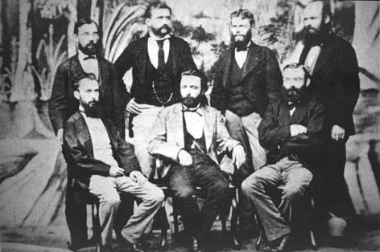

|
|  |
| Members of the Argentinean Academy of
Sciences, 1876 |
It could be argued, however, that national elites in Latin America were
themselves constantly performing for a European gaze that was the
implicit frame and condition of all the images of "internal otherness".
These images, then, are always overcoded by an anxiety, a latent
knowledge about the fact that the very technologies deployed to "other"
the subject of the image are always already at work on its own
beholder. "Otherness" is a social relation, a subject position assigned
an occupied in contexts of struggle and violence but also of hegemony
and of resistance. It is never an essence. In that at least, it
resembles the self against which it is posited.

|